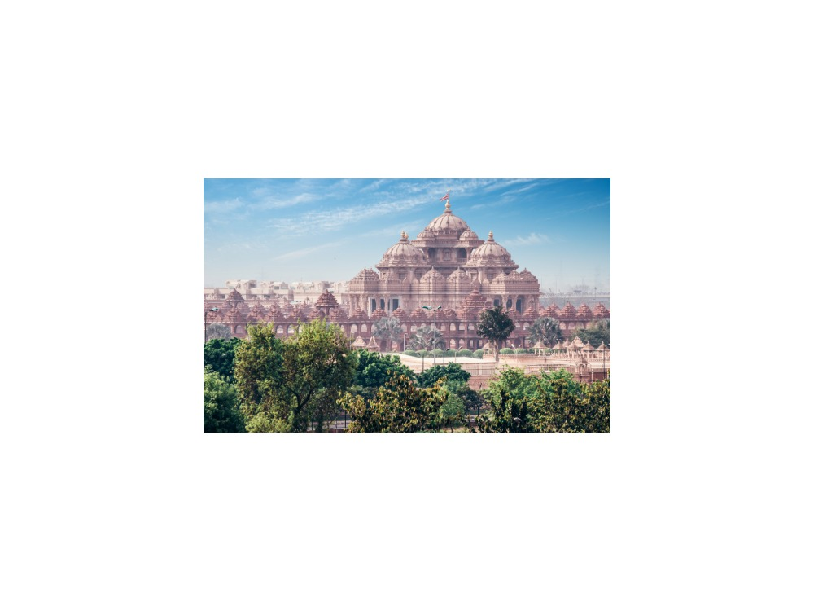
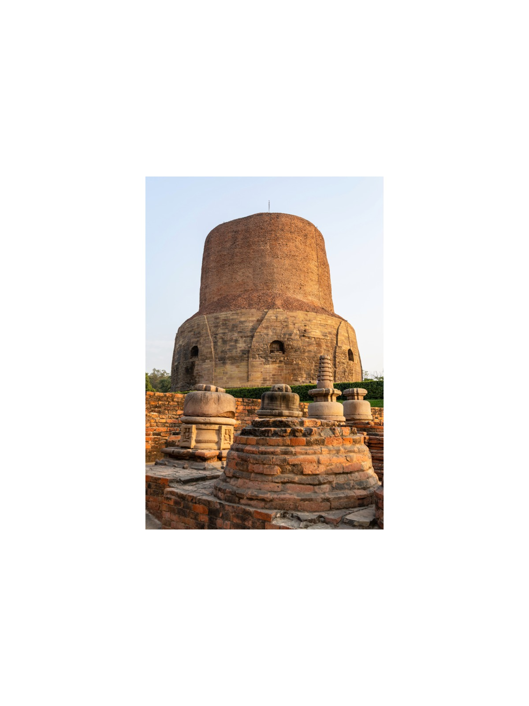
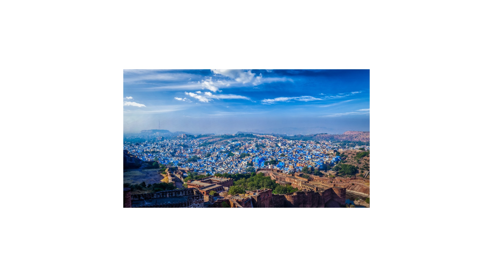
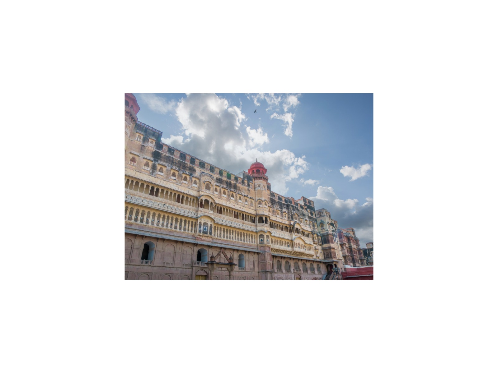
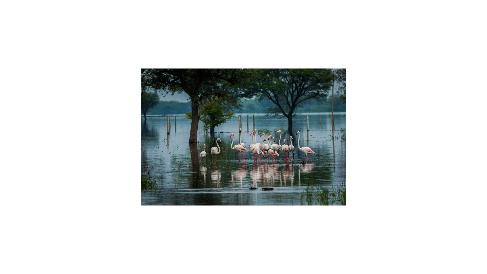
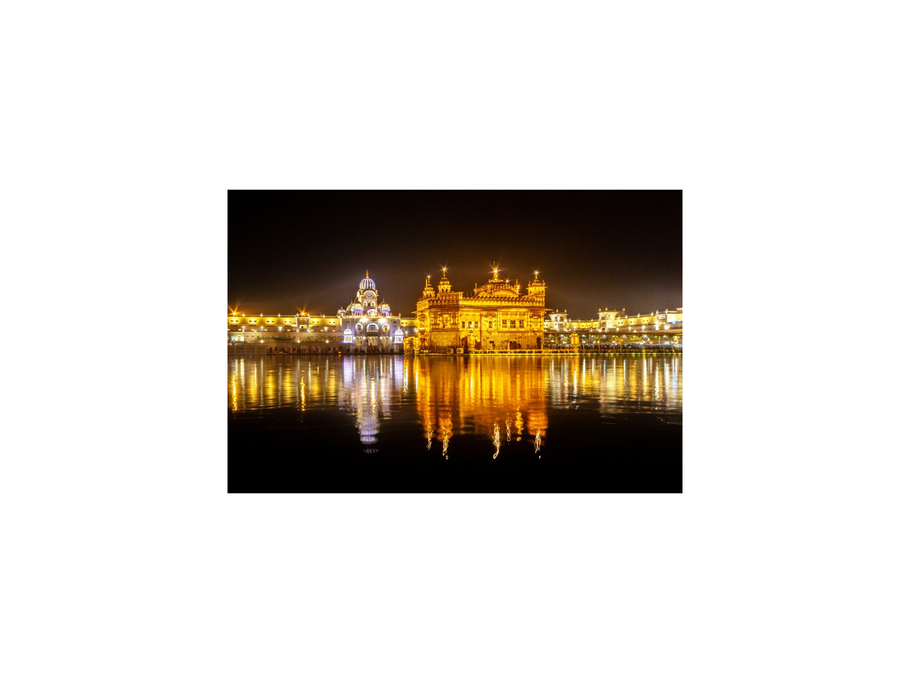
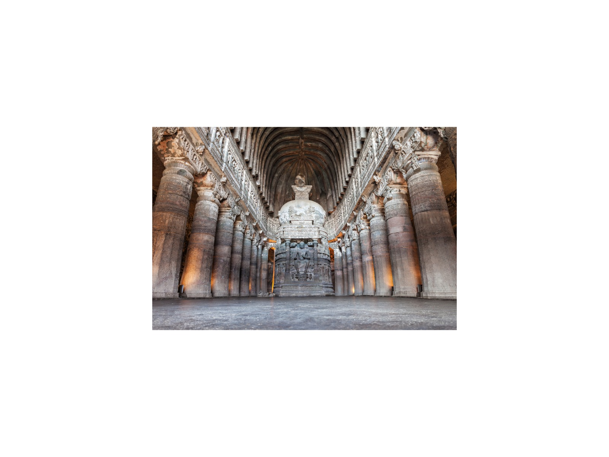

Дели
Столица Индии, где бок о бок стоят наследие Могольской империи, Делийского султаната и колониальной эпохи.

Агра и Фатехпур-Сикри
Тадж-Махал, форт Агры, Фатехпур-Сикри и мавзолеи Акбара и Итимад-уд-Даулы.

Джайпур и Абханери
Розовый город, его горные форты и дворцы и древний ступенчатый колодец Чанд-Баори.

Каджурахо, Орчха и Гвалиор
Храмы Каджурахо (ЮНЕСКО), заповедник Панна и дворцы Орчхи и Гвалиора.

Варанаси и Сарнатх
Гхаты на Ганге, вечерняя арти и Сарнатх, где Будда произнёс первую проповедь.

Бодх-Гая и буддийский маршрут
Бодх-Гая, Гая, Раджгир, Наланда и Патна — древний паломнический маршрут Бихара.

Джодхпур, Ранакпур и Кумбхалгарх
Голубой город под фортом Мехрангарх, мраморный храм Ранакпур и великая стена Кумбхалгарха.

Удайпур и Читторгарх
Город озёр, храм Эклингджи и легендарная крепость Читторгарх.

Джайсалмер и Биканер
Золотой город пустыни Тар с живым фортом и форт Джунагарх в Биканере.

Рантхамбор, Бунди и Бхаратпур
Один из самых известных тигровых заповедников Индии, ступенчатые колодцы Бунди и птичий заповедник Кеоладео.

Химачал-Прадеш
Колониальная Шимла, узкоколейка ЮНЕСКО, долина Куллу и тибетское сердце Мак-Леод Гандж.

Амритсар
Золотой храм, Джалианвала-Баг и церемония на границе Вагах.

Дарджилинг и Сикким
Чайные плантации, буддийские монастыри и Канченджанга: Дарджилинг, Калимпонг и Гангток.

Мумбаи и побережье Конкан
Набережная Мумбаи, пещеры Элефанта, морской форт Мурад-Джанджира и Райгад.

Пуна и Нашик
Пуна времён маратхов, пещеры Карла и Бхаджа и Нашик на священной Годавари.

Аурангабад, Эллора и Аджанта
Скальные пещеры Аджанты и Эллоры, форт Даулатабад, Хулдабад и кратер Лонар.
Расскажите о датах и интересах
Я лично подготовлю программу и расчёт стоимости в течение 24 часов. Никаких групп и шаблонов.